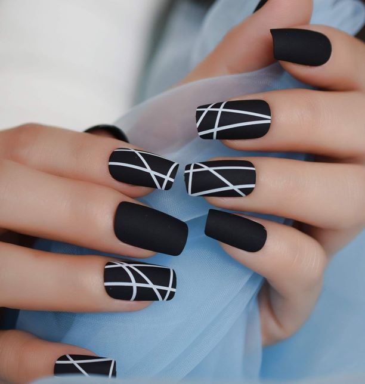

ABOUT ME
Hey there im an information systems student with a passion of blending technology and business.My interest lies in understanding how organisations use technology to optimize their daily operations to improve decision making and achieve their goals.From Database mangement and system analysis to project managemrnt and data analylitics.I enjoy various aspects of information systems.
NAILS
I'm a talanted nail artist with a passion for tranfmorming nails into maiature works of art. i love exploring unique designs,colors and techniquest to crate beautiful nails that make clients feel beutiful.I offer nail services and skin care.For the skin care I offer a proper foot and hand massage and parrafin wax.The parrafin wax helps to soften the skin,treatment of cuticles and also provide a relief to the joints and muscles.The nail salon also offers manicure,padicure and nail art.
CAKES

Im a passionate baker with a flair for creating sweet delightful treats.I love experimenting with textures and flavours to bring joy to peoples test buds.Baking is not a profession for me, its an art form where i por my heart and soul into evey creation.